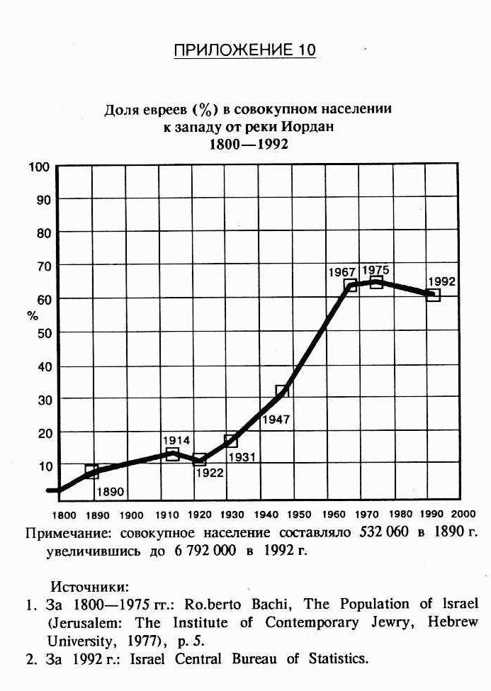

ПРИЛОЖЕНИЕ 1
АРАБО-ЕВРЕЙСКОЕ СОГЛАШЕНИЕ В ВЕРСАЛЕ
СОГЛАШЕНИЕ МЕЖДУ ЭМИРОМ ФЕЙСАЛОМ И ДОКТОРОМ ВЕЙЦМАНОМ ОТ 3 ЯНВАРЯ 1919 г.
Его королевское величество эмир Фейсал, представляющий Арабское королевство Хиджаз, и д-р Хаим Вейцман, действующий от лица и по поручению Сионистской организации, памятуя о расовой близости и давних связях арабского и еврейского народов, отдавая себе отчет, что только через самое тесное сотрудничество в развитии Арабского государства и Палестины возможно осуществление основных чаяний этих народов, желая дальнейшего укрепления отношений и взаимопонимания, пришли к согласию по поводу следующих пунктов:
Статья 1
Во всем, что касается их взаимоотношений, Арабское государство и Палестина будут неизменно руководствоваться исключительно доброй волей и взаимопониманием, и во обеспечение этого на соответствующих территориях будут своевременно аккредитованы арабские и еврейские уполномоченные.
Статья 2
По завершении всех согласований на Мирной Конференции, между Арабским государством и Палестиной будут незамедлительно установлены специальной Комиссией четкие границы, которые должны быть одобрены сторонами.
Статья 3
При выработке палестинской Конституции и создании администрации Палестины должны быть использованы те критерии, которые наиболее полным образом гарантируют исполнение Декларации Британского правительства от 2 ноября 1917 года.
Статья 4
Будут приняты все необходимые меры для поощрения наиболее широкой иммиграции евреев в Палестину и, по возможности, наиболее быстрого расселения иммигрантов на землях с предпочтением компактных поселений и интенсивного земледелия. При этом права арабских феллахов и фермеров-арабов не должны ущемляться, и им должна быть оказана помощь в скорейшем экономическом развитии.
Статья 5
Не могут издаваться законы, и не может официально одобряться какое-либо ограничение или вмешательство в свободу религиозных отправлений. Навсегда провозглашается свобода вероисповедания и отправления религиозных обрядов без какой бы то ни было дискриминации. При осуществлении гражданских или политических прав религиозные убеждения не должны приниматься в расчет.
Статья 6
Мусульманские Святые Места остаются под мусульманским контролем.
Статья 7
Сионистская организация предполагает направить в Палестину комиссию экспертов для исследования экономических возможностей страны и выработки лучших способов ее развития. Сионистская организация предоставит вышеупомянутую комиссию в распоряжение Арабского государства с целью обследования экономического состояния этого государства и определения наилучших способов его развития. Сионистская организация приложит все усилия, чтобы помочь Арабскому государству в разработке природных богатств и экономического потенциала в целом.
Статья 8
Стороны обязуются действовать в полном согласии и сотрудничать во всех начинаниях, предпринимаемых до Мирной Конференции.
Статья 9
По всем спорным вопросам, могущим возникнуть между сторонами, следует обращаться за третейским судом к правительству Великобритании.
Подписано в Лондоне, Англия, третьего января тысяча девятьсот девятнадцатого года.
Хаим Вейцман
Фейсал ибн Хусейн
УСЛОВИЕ, ПОСТАВЛЕННОЕ ЭМИРОМ ФЕЙСАЛОМ
Если арабские проблемы будут решены так, как я просил в меморандуме, направленном 4 января британскому министру иностранных дел, то я выполню пункты данного соглашения. Если же будут изменения, то я снимаю с себя ответственность за невозможность выполнения данного соглашения.
ПРИЛОЖЕНИЕ 2
ИЗ ПЕРЕПИСКИ ФЕЙСАЛА С ФРАНКФУРТЕРОМ
ДЕЛЕГАЦИЯ XИДЖАЗА
ПАРИЖ, 3 марта 1919
Уважаемый господин Франкфуртер! Я, пользуясь случаем своего первого знакомства с американскими сионистами, хочу высказать то, что неоднократно говорил д-ру Вейцману на Ближнем Востоке и в Европе.
Мы считаем, что арабы и евреи являются двоюродными братьями по расе. Оба народа одинаково пострадали от держав более мощных, чем они сами, и, по счастливому стечению обстоятельств, смогут сделать первые шаги по достижению своих национальных идеалов вместе.
Мы, арабы, особенно, образованные среди нас, с глубокой симпатией относимся к сионистскому движению. Наша делегация здесь, в Париже, внимательно ознакомилась с предложениями, представленными вчера Сионистской Организацией на рассмотрение Мирной Конференции, и находит их умеренными и справедливыми. Мы сделаем все, что в наших силах, чтобы они были приняты. Мы готовы сердечно приветствовать возвращение евреев на родину.
У нас сложились близкие отношения с лидерами вашего движения, особенно с доктором Вейцманом. Он очень помог нам в осуществлении наших задач, и я надеюсь, что у арабов скоро появится возможность отблагодарить евреев за их доброту. Мы вместе работаем на дело возрождения и реформирования Ближнего Востока, и наши движения дополняют друг друга. Еврейское движение является национальным и не империалистическим, наше движение национальное и не империалистическое, и в Сирии нам всем хватит места. Более того, я думаю, что один без другого мы не добьемся успеха.
Игнорируя необходимость сотрудничества арабов и сионистов, люди, менее информированные и менее ответственные, чем наши лидеры, пытались и пытаются эксплуатировать локальные трудности, которые неизбежно возникают в Палестине на ранних стадиях работы. Кое-кто из них, я боюсь, в ложном свете представил арабскому крестьянству ваши цели, а наши цели неверно объяснил простым евреям. И все это для того, чтобы создать себе капитал на том, что они называют нашими противоречиями.
Мне хочется донести до вас мое твердое убеждение, что наши разногласия касаются не принципиальных вопросов, а лишь незначительных пунктов, споры по которым неизбежно возникают между соседними народами и легко улаживаются при обоюдной доброй воле. Все они, я уверен, исчезнут, благодаря дальнейшему распространению информации и знаний.
Я и мой народ с надеждой ждем того времени, когда мы будем помогать вам, а вы - нам, чтобы страны, в которых мы взаимно заинтересованы, снова заняли достойное место в семье цивилизованных народов мира. Полагайтесь на меня и верьте мне, искренне ваш
(подписано) Фейсал
5 марта 1919
ПРИЛОЖЕНИЕ (3) - МАНДАТ ЛИГИ НАЦИЙ
24 июля 1922
МАНДАТ НА ПАЛЕСТИНУ
Совет Лиги Наций:
Поскольку главные союзнические державы, во исполнение оговоренного параграфом 22 Устава Лиги Наций, пришли к решению передать власть над Палестиной, которая ранее принадлежала Оттоманской империи, Мандатному уполномоченному, избранному этими державами, и в границах, устанавливаемых этими державами;
Поскольку главные союзнические державы также пришли к решению, что Мандатный уполномоченный будет нести ответственность за реализацию заявления от 2 ноября 1917 года, сделанного правительством Его Величества короля Британии и одобренного вышеназванными державами, об образовании национального дома еврейского народа при непременном условии, что не будут ущемлены гражданские и религиозные права живущих на этой территории нееврейских общин, а также политические права евреев, проживающих в других странах;
Поскольку историческая связь еврейского народа с Палестиной осознана и признана, так же, как и право евреев возродить свой национальный дом на этой земле;
Поскольку своим Мандатным уполномоченным по Палестине главные союзнические державы избрали Его Величество короля Британии;
Поскольку условия мандата на Палестину уже сформулированы и представлены на утверждение Совету Лиги Наций;
Поскольку Его Величество король Британии принял на себя мандатные полномочия в отношении Палестины и согласился отправлять их от лица Лиги Наций и по предложенным ею принципам;
Поскольку в вышеупомянутом параграфе 22 (раздел 8) Устава Лиги Наций степень полномочий мандатного правительства, заранее не согласованного членами Лиги, подлежит эксплицитному определению Советом Лиги Наций;
Подтверждая вышеуказанный мандат, определяет его условия следующим образом:
Статья 1
Мандатный уполномоченный будет обладать всей полнотой административной и законодательной власти, за исключением тех случаев, когда ее ограничивают условия данного мандата.
Статья 2
Мандатный уполномоченный будет нести ответственность за создание в стране таких политических, административных и экономических условий, которые наилучшим образом обеспечат создание Еврейского национального дома, как это сформулировано в преамбуле, обеспечат развитие институтов самоуправления, а также защиту гражданских и религиозных прав всех жителей Палестины, независимо от расовой и религиозной принадлежности.
Статья 3
Мандатный уполномоченный будет, насколько позволят обстоятельства, развивать местную автономию.
Статья 4
Соответствующая еврейская организация получит статус официальной организации, в задачи которой входят консультации и сотрудничество с Администрацией Палестины в тех экономических, социальных и других вопросах, которые могут повлиять на создание Еврейского национального дома, на интересы еврейского населения Палестины и - постоянно под контролем Администрации - на развитие страны в целом.
Такой организацией может быть признана Сионистская организация, до тех пор, пока она, с точки зрения Мандатного уполномоченного, подходит по всем основным принципам своей структуры и организации. После консультаций с правительством Его Величества короля Британии она должна предпринять меры по привлечению к сотрудничеству всех евреев, которые хотят участвовать в создании Еврейского национального дома.
Статья 5
Мандатный уполномоченный несет ответственность за то, чтобы ни одна часть палестинской территории не была отдана, сдана в аренду или попала под контроль какого-либо иностранного государства.
Статья 6
Обеспечивая защиту прав и положения других групп населения, Администрация Палестины будет обеспечивать наиболее благоприятные условия для иммиграции евреев и - совместно с упомянутой в пункте 4 еврейской организацией - компактное расселение иммигрантов на земле, включая как государственные, так и пустующие земли, не востребуемые для общественных нужд.
Статья 7
Администрация Палестины будет ответственна за принятие закона о гражданстве, включающего параграфы, которые облегчат получение палестинского гражданства евреям, избравшим Палестину местом своего постоянного проживания.
Статья 8
Привилегии и неприкосновенность иностранцев, включая консульскую юрисдикцию и защиту, которыми они ранее пользовались по Капитуляциям или по обычаям Оттоманской империи, применяться в Палестине не будут.
(Капитуляции – договоры Оттоманской Империи с христианскими державами об особом статусе этих держав, находившихся на территории турецкой Палестины (прим.перев.)).
Если же державы, чьи подданные пользовались вышеупомянутыми привилегиями до 1 августа 1914 года, не откажутся заранее от прав на их возобновление, или же не согласятся с их неприменением на оговоренный период, то по истечении срока Мандата эти привилегии и неприкосновенность будут восстановлены во всей их полноте, или с теми изменениями, о которых договорятся заинтересованные державы.
Статья 9
Мандатный уполномоченный обязан проследить за тем, чтобы судебная система, создаваемая в Палестине, полностью гарантировала все права как иностранцев, так и местных жителей.
Должно полностью гарантироваться уважение к статусу различных народностей общин и к их религиозным убеждениям. В частности, контроль и управление вакфами должны осуществляться в соответствии с религиозным правом и распоряжениями дарителей.
Статья 10
Для принятия специальных экстраординарных соглашений на Палестину распространяются договоры о выдаче преступников, заключенные между Мандатным уполномоченным и иностранными государствами.
Статья 11
Администрация Палестины примет все необходимые меры по защите интересов населения в связи с развитием страны и, выполняя все международные обязательства, принятые Мандатным уполномоченным, будет иметь необходимые полномочия, чтобы обеспечить общественное владение или общественный контроль за естественными богатствами страны, общественными работами, коммунальными услугами и предприятиями общественного пользования, как существующими уже, так и проектируемыми. Администрация введет такую систему землепользования, которая наиболее отвечает нуждам страны, в частности, с учетом желательности компактных поселений и интенсивного земледелия.
Администрация может передать еврейской организации, упомянутой в пункте 4, строительство любых сооружений или руководство любыми общественными работами и услугами, а также разработку любых природных ресурсов, естественно, на справедливых условиях и не в ущерб своим собственным планам. При заключении подобных договоров необходимо оговаривать, что данная еврейская организация имеет право распоряжаться, будь то прямо или косвенно, лишь разумным процентом с прибыли на вложенный капитал. Остальная часть прибыли должна использоваться под контролем администрации на нужды страны.
Статья 12
На Мандатного уполномоченного будет возложен контроль за международными отношениями Палестины и право выдавать экзекватуры консулам иностранных государств. Ему также вменяется в обязанность дипломатическая и консульская защита граждан Палестины, когда они находятся за пределами страны.
Статья 13
Мандатный уполномоченный возьмет на себя ответственность за Святые Места и религиозные сооружения в Палестине, сохраняя все их права и обеспечивая к ним свободный доступ и свободное отправление там религиозных ритуалов, в то же время гарантируя общественный порядок и соблюдение всех приличий. За все вышеперечисленное и связанное с ним, Мандатный уполномоченный несет ответственность исключительно перед Лигой Наций и может договариваться с Администрацией о разумных мерах по реализации поставленных в этом пункте задач, однако с запрещением вмешиваться в структуру и управление сугубо мусульманских Святых Мест, чья неприкосновенность должна гарантироваться.
Статья 14
Мандатным уполномоченным будет назначена специальная комиссия по изучению, выяснению и определению прав и притязаний в связи со Святыми Местами и вообще прав и притязаний различных религиозных общин в Палестине. Принцип структуры, выбора членов и функционирования данной комиссии должен быть представлен на утверждение Совету Лиги Наций, без разрешения которого невозможно ни назначение комиссии, ни начало ее деятельности.
Статья 15
Мандатный уполномоченный должен обеспечить равную для всех граждан свободу совести и отправления различных религиозных обрядов, при условии, что не нарушается общественная мораль и сохраняется общественный порядок. Запрещается любая дискриминация жителей Палестины по расовому, религиозному или языковому признакам. Никто не может быть изгнан из страны только по причинам исключительно религиозного характера.
За каждой из общин признается право создавать школы для обучения своих членов на своем языке, сообразуя программу обучения с учебными требованиями общего характера, выдвинутыми Администрацией.
Статья 16
Мандатный уполномоченный будет осуществлять такой надзор над религиозными и благотворительными организациями всех конфессий в Палестине, который обеспечит сохранение общественного порядка и успешное функционирование этих организаций. При надзоре не должно происходить никакого вмешательства в деятельность этих организаций и никакой дискриминации их представителей или членов по религиозной и национальной принадлежности.
Статья 17
Администрации Палестины разрешается создать на добровольной основе силы для поддержания мира и порядка, а также для защиты страны. Эти силы будут находиться под наблюдением Мандатного уполномоченного, и не могут без его согласия использоваться для иных, не перечисленных выше, целей. Не допускается создание Администрацией Палестины никаких сухопутных или воздушных сил для каких-либо, не обозначенных выше, целей.
Ничто, изложенное в данной статье, не запрещает администрации вкладывать средства на поддержание вооруженных сил Мандатного уполномоченного Палестины.
Статья 18
Мандатному уполномоченному вменяется в обязанность проследить, чтобы в Палестине не дискриминировались подданные государств-членов Лиги Наций (включая фирмы и компании, зарегистрированные в этих державах) и граждане других иностранных государств в отношении налогов, коммерции, перевозок, деловой, промышленной или профессиональной деятельности, а также коммерческого судоходства и гражданской авиации. Таким же образом в Палестине не допускается дискриминация товаров, произведенных в вышеперечисленных государствах, или направляемых туда. В подмандатных районах должен осуществляться свободный транзит на справедливых условиях.
Принимая во внимание как вышеизложенное, так и другие положения мандата, Администрация Палестины может, по согласованию с Мандатным уполномоченным, устанавливать такие налоги и таможенные пошлины и предпринимать такие шаги по разработке естественных ресурсов страны и защите интересов граждан, какие сочтет необходимыми и полезными. Администрация также может, после консультаций с Мандатным уполномоченным, заключать особые таможенные договоры с любым государством, территория которого полностью входила в 1914 году в состав азиатской части Оттоманской империи или в Аравию.
Статья 19
От имени Администрации Палестины Мандатный уполномоченный подписывает все международные соглашения, как уже существующие, так и новые из числа тех, которые будут заключаться с одобрения Лиги Наций, касающиеся работорговли, торговли оружием н боеприпасами, торговли наркотиками, а также договоры, касающиеся торгового равноправия, свободы транзита, морской и воздушной навигации, почтовой, телеграфной и беспроволочной связи, прав на литературную, художественную и промышленную собственность.
Статья 20
От имени Администрации Палестины Мандатный уполномоченный будет проводить, насколько позволят религиозные, социальные и другие условия в стране, общую с Лигой Наций политику по профилактике и борьбе с болезнями, включая болезни животных и растений.
Статья 21
Мандатный уполномоченный обеспечит в течение года принятие и введение в действие закона о памятниках древности, основанного на следующих принципах. Закон предоставит равные права в отношении раскопок и археологических исследований всем представителям держав, являющихся членами Лиги Наций.
1) Под памятником древности понимается любое сооружение или продукт человеческой деятельности, датируемый ранее 1700 года.
2) Закон о памятниках древности предпочтительнее осуществлять с помощью поощрений, не наказаний. Любой человек, обнаруживший памятник древности, но не имеющий специального разрешения, упомянутого в подпункте 5, заявив о находке официальному представителю соответствующего департамента, получит вознаграждение, соразмерное ее ценности.
3) Любой памятник может быть передан только в соответствующий департамент, за исключением тех случаев, когда департамент отказывается от приобретения данного памятника. Ни один памятник древности не может быть вывезен без экспертного разрешения вышеупомянутого департамента.
4) Любой человек, по злому умыслу или халатному небрежению разрушающий, или наносящий вред памятникам древности, будет подвержен наказаниям, систему которых предстоит разработать.
5) Под угрозой штрафа запрещается расчистка земли и раскопки с целью поиска памятников древности лицами, не получившими специального разрешения от соответствующего департамента.
6) При отчуждении, временном или постоянном, земель, представляющих исторический или археологический интерес, должны быть выработаны справедливые условия.
7) Право производить раскопки будет предоставляться только лицам, обладающим достаточной археологической квалификацией. При этом Администрация Палестины, предоставляя эти права, не должна без веских причин отказывать в разрешении ученым отдельных стран.
8) Находки, сделанные в процессе раскопок, могут быть поделены между археологами и соответствующим департаментом в пропорциях, установленных департаментом. Если такой раздел по научным причинам невозможен, археологи должны получить справедливое возмещение своей части найденного.
Статья 22
Официальными государственными языками Палестины будут английский, арабский и иврит. Любая арабская надпись на марках или деньгах должна быть повторена на иврите, любая надпись на иврите должна быть повторена на арабском.
Статья 23
Администрация Палестины признает религиозные праздники соответствующих общин официальными выходными днями для членов этих общин.
Статья 24
Мандатный уполномоченный будет представлять Лиге Наций ежегодный отчет для одобрения мер, принятых за год по реализации положений мандата. К отчету будут прилагаться копии всех законов и постановлений, принятых за данное время.
Статья 25
На территориях, расположенных между Иорданом и восточной границей Палестины, по ее окончательному установлению, Мандатный уполномоченный получает право, с согласия Совета Лиги Наций, отложить применение или воздержаться от применения тех положений Мандата, которые, на его взгляд, не подходят к местным условиям, и одновременно разработать такие положения для местной администрации территорий, которые эти особые условия учитывают. При этом не должны предприниматься действия, противоречащие пунктам 15,16 и 18 мандата.
Статья 26
Мандатный уполномоченный дает согласие на то, что, при возникновении какого-либо спора между ним и государством-членом Лиги Наций по поводу трактовки того или иного положения данного мандата, этот спор, если он не может быть урегулирован путем двусторонних переговоров, будет вынесен на решение постоянно действующего Международного Суда, созданного на основании параграфа 14 Устава Лиги Наций.
Статья 27
Для изменения положений и условий данного мандата требуется согласие Совета Лиги Наций.
Статья 28
В случае завершения Мандата, передаваемого этим документом Мандатному уполномоченному, Совет Лиги Наций предпримет все необходимые шаги по защите прав, предоставляемых в пунктах 13 и 14, и использует все свое влияние, при гарантии Лиги Наций, чтобы правительство Палестины полностью приняло на себя законные финансовые обязательства Администрации Палестины, законно принятые во время срока мандата, включая права государственных служащих на пенсии и пособия.
Настоящий документ будет храниться в оригинале в архиве Лиги Наций, а его заверенные копии государственный секретарь Лиги направит всем ее государствам-членам.
Лондон, двадцать четвертое нюня тысяча девятьсот двадцать второго года
Генеральный секретарь
ПРИЛОЖЕНИЕ 4
ОБЕЩАНИЕ РИББЕНТРОПА МУФТИЮ
УНИЧТОЖИТЬ ЕВРЕЙСКИЙ НАЦИОНАЛЬНЫЙ ОЧАГ В ПАЛЕСТИНЕ
Министерство иностранных дел
Берлин, 28 апреля 1942
Ваше Преосвященство!
В ответ на Ваше письмо и на сопровождавшее его послание Его Превосходительства премьер-министра Рашида Али Эль Гайлани, а также подтверждая положения нашей беседы, имею честь сообщить Вам следующее:
Германское правительство высоко оценивает одобрение арабскими народами целей Держав Оси и их решимости довести борьбу против общего врага до победного конца. Германское правительство относится с большим пониманием к национальным устремлениям арабских стран, как они были выражены вами обоими, и испытывает глубокое сочувствие к страданиям ваших народов под британским гнетом.
Имею честь уверить Вас, с полного согласия итальянского правительства, что достижение независимости и свободы страдающих под английским ярмом арабских стран, являются одной из целей германского правительства.
Германия, соответственно, готова оказать всемерную поддержку угнетенным арабскими странам в их борьбе с британскими завоевателями, в осуществлении их стремления к независимости и суверенитету, а также в разрушении Еврейского национального очага в Палестине.
Как было договорено ранее, содержание данного письма должно сохраняться в полной тайне до особого решения.
Уверяю Ваше Преосвященство в своем искреннем уважении.
(подписано)
Риббентроп
Его Преосвященству,
Великому Муфтию Палестины Амину Эль Хусейни
Приложение 5
ХАРТИЯ ОРГАНИЗАЦИИ ОСВОБОЖДЕНИЯ ПАЛЕСТИНЫ
(принято в 1964 году, пересмотрено в 1968)
Данный Устав будет называться "Палестинским Национальным Уставом (Аl-Мihaq Al-Watani Al-Filastini)
Статья 1
Палестина является родиной арабского народа Палестины, неотъемлемой частью великой арабской родины. Народ Палестины является частью арабской нации.
Статья 2
В границах, существовавших во времена Британского мандата, Палестина представляет собой неделимое региональное образование.
Статья 3
Арабский народ Палестины имеет законное право на свою родину, и когда ее освобождение завершится, он осуществит самоопределение только согласно своему собственному выбору и волеизъявлению.
Статья 4
Черты палестинского национального характера являются врожденными, устойчивыми, они не исчезают, а передаются от отца к сыну. Сионистская оккупация и, как результат этого бедствия, рассеяние арабского народа Палестины, не лишают его ни национального характера, ни национальных корней.
Статья 5
Палестинцем считается гражданин арабского происхождения, который постоянно проживал в Палестине до 1947г., независимо от того, остался он, или был изгнан. Тот, кто рожден от отца-палестинца после этого срока, будь то в самой Палестине или за ее пределами, является палестинцем.
Статья 6
Евреи, постоянно проживавшие в Палестине до начала сионистского вторжения, будут считаться палестинцами.
Статья 7
Палестинские корни, материальные, духовные и исторические связи с Палестиной являются постоянными, неизменными реалиями. Воспитание палестинцев в арабском и революционном духе, закаливание их сознания для ощущения себя истинными "палестинцами", глубокое ознакомление с родиной, чтобы всеми средствами подготовить их к противостоянию и вооруженной борьбе, к жертве как имущества, так и самой жизни ради восстановления родины - все это является национальным долгом.
Статья 8
Период времени, который сейчас переживает палестинский народ - это период национальной борьбы за освобождение Палестины. Поэтому противоречия между палестинскими национальными силами сейчас являются второстепенными, и должны быть преодолены ради фундаментального противоречия между сионизмом и колониализмом с одной стороны, и арабским народом Палестины с другой. В связи с этим, палестинские массы на своей родине и в местах изгнания, как организации, так и отдельные личности, составляют единый национальный фронт, который, в целях освобождения Палестины, действует посредством вооруженной борьбы.
Статья 9
Вооруженная борьба - единственный способ освободить Палестину, и, посему, она является стратегией, а не тактикой. Арабский народ Палестины подтверждает свою непреклонную решимость наращивать и усиливать вооруженную борьбу, доведя ее до народной революции с целью освободить родину и вернуться в свою страну, возвратив себе право на нормальную жизнь, самоопределение и суверенитет.
Статья 10
Федаинские действия составляют ядро народной палестинской войны за освобождение, что требует их развития, усиления и защиты. Чтобы гарантировать продолжение революции, ее нарастание и победу, требуется мобилизация всех сил и интеллектуальных способностей палестинцев, их организованное включение в вооруженную революционную деятельность, сплоченность в национальной (Watani) борьбе различных групп и их тесная связь с массами.
Статья 11
У палестинцев три лозунга: Национальное (Wataniууа) единство, национальная (Quawmiууа) мобилизация и освобождение.
Статья 12
Арабский народ Палестины верит в арабское единство. Чтобы сыграть свою роль в осуществлении этого стремления, он должен сохранить на данной стадии национальной борьбы свой палестинский национальный характер, его основные черты, а, следовательно, должен повышать самосознание и противиться любым замыслам, способным ослабить или разрушить этот национальный характер.
Статья 13
Арабское единство и освобождение Палестины - взаимодополняющие цели. Одна прокладывает путь другой. Арабское единство ведет к освобождению Палестины, а освобождение Палестины ведет к арабскому единству. Работая на одну цель, работаешь на другую.
Статья 14
Судьба арабской нации, само существование арабов зависит от решения палестинской проблемы. Этим и объясняются стремления и усилия арабской нации, направленные на освобождение страны. Народ Палестины взял на себя ведущую роль в осуществлении этой священной национальной задачи.
Статья 15
Освобождение Палестины, с арабской точки зрения, является национальным долгом арабов по отражению сионистского, империалистического вторжения в великую арабскую родину и по очистке ее от сионистского присутствия. Полная ответственность за осуществление этой задачи ложится на всю арабскую нацию, ее народы и правительства во главе с народом Палестины.
Для этой цели арабская нация должна мобилизовать весь свой военный, человеческий, материальный и духовный потенциал, и активно участвовать в борьбе вместе с народом Палестины. Арабская нация, особенно на данном этапе вооруженной борьбы палестинцев, обязана предоставить им всю возможную помощь, материальную и моральную поддержку, использовать любые средства, чтобы народ Палестины продолжал играть ведущую роль в вооруженной революционной борьбе до победного конца - освобождения своей родины.
Статья 16
С духовной точки зрения, освобождение Палестины создаст в Святой Земле атмосферу мира и спокойствия, защитит все Святые Места, даст гарантию их свободного посещения и поклонения без всякой дискриминации по расовому, языковому и религиозному принципу. На этом основании народ Палестины надеется на поддержку всех духовных сил мира.
Статья 17
С гуманистической точки зрения, освобождение Палестины восстановит достоинство, величие и свободу палестинцев. На этом основании арабский народ Палестины надеется на поддержку тех, кто верит в достоинство и свободу личности.
Статья 18
С международной точки зрения, борьба за освобождение Палестины акт вынужденной самозащиты. На этом основании народ Палестины, желающий жить в дружбе со всеми народами, надеется на поддержку всех государств, которые разделяют идеалы свободы, мира и справедливости, и которые помогут восстановить в регионе законность, безопасность и мир, осуществить право палестинцев на национальный суверенитет и национальную свободу.
Статья 19
Раздробление Палестины в 1947 году и образование Израиля недействительны и не имеют законной силы, сколько бы времени ни прошло с того момента, поскольку были совершены вопреки воле палестинского народа, вопреки его правам на свою родину и вошли в противоречие с принципами, воплощенными в Уставе Организации Объединенных Наций, первым из которых является право на самоопределение.
Статья 20
Декларация Бальфура и Мандат на Палестину и все, что было сделано на их основе, недействительно и не имеет силы. Претензия на историческою и духовную связь евреев с Палестиной не соответствует ни исторической реальности, ни основным характеристикам государственности в их истинном понимании. Иудаизм, как религия откровения, не имеет национальности и независимого существования.
Точно так же и евреи не единый народ и не обладают национальным характером. Они, скорее, граждане тех государств, в которых проживают.
Статья 21
Арабский народ Палестины, выражая себя через вооруженную революционную борьбу, отвергает любое решение палестинской проблемы, подменяющее ее полное освобождение, отвергает любые планы урегулирования и интернационализации.
Статья 22
Сионизм является политическим движением, органически связанным с мировым империализмом, и враждебным всем силам, выступающим за свободу и прогресс в мире. По своей сути это расистское и фанатичное движение; по целям - агрессивное, экспансионистское и колониалистское; по средствам фашистское и нацистское. Израиль - орудие сионизма, поставщик человеческого материала и географическая база мирового империализма, необходимая ему в сердце арабской родины как база сосредоточения сил и как стартовая площадка для посягательства на надежды арабской нации на свободу, единство и прогресс.
Израиль представляет постоянную угрозу миру на Ближнем Востоке и на земном шаре в целом. Поскольку освобождение Палестины очистит регион от сионистского и империалистического присутствия, приведет к стабилизации мира, то народ Палестины надеется на поддержку всех свободомыслящих людей, всех сил прогресса и мира, независимо от их политической ориентации и просит их о помощи в своей справедливой и законной борьбе за освобождение родины.
Статья 23
Стремление к миру и безопасности, правде и справедливости обязывает все государства, выступающие за дружеские отношения между народами и уважающие преданность граждан своей родине, считать сионизм незаконным движением и запретить его деятельность и существование.
Статья 24
Арабский народ Палестины верит в принципы справедливости, свободы, суверенитета, самоопределения, уважения человеческого достоинства и прав человека на осуществление этих принципов.
Статья 25
Чтобы осуществить принципы и цели данной программы, Организация Освобождения Палестины приложит все силы для освобождения своей родины.
Статья 26
Организация Освобождения Палестины, представляющая силы палестинской революции, несет ответственность за борьбу арабского народа Палестины с целью освобождения родины, возвращения в свою страну и получения в ней права на самоопределение. Ответственность распространяется на военные, политические, финансовые и любые другие сферы, которые касаются палестинской проблемы как в арабских странах, так и на международной арене.
Статья 27
Организация Освобождения Палестины будет сотрудничать со всеми арабскими государствами, соответственно возможностям этих государств, будет сохранять нейтралитет в отношениях с ними и свете нужд борьбы за освобождение и придерживаться принципа невмешательства во внутренние дела арабских государств.
Статья 28
Арабский народ Палестины требует признания самобытности и независимости своей национальной революции и отвергает любое вмешательство или руководство ею со стороны.
Статья 29
Арабский народ Палестины имеет преимущество, особое право на освобождение и восстановление своей родины, и определит свои отношения со всеми другими государствами и силами на основе их позиции в отношении палестинского вопроса и размера помощи, оказанной революционной борьбе (палестинцев) за осуществление их целей.
Статья 30
Те, кто сражался с оружием в руках в битве за освобождение, являются ядром Народной армии и станут крепким щитом арабского народа Палестины.
Статья 31
У организации будет знамя, присяга и гимн, созданные в соответствии с особыми принципами.
Статья 32
К данной программе прилагается закон, известный, как Основной Закон Организации Освобождения Палестины, где, в соответствии с программой, определяется структура создания организации, ее комитеты, учреждения, их особые функции и обязанности.
Статья 33
Поправки в эту программу могут быть внесены только большинством в две трети членов Национального Совета Организации Освобождения Палестины при голосовании на специальном, созванном для этой цели заседании.
ПРИЛОЖЕНИЕ 6
РЕЗОЛЮЦИЯ №242 СОВЕТА БЕЗОПАСНОСТИ ООН
22 ноября 1967
Совет Безопасности,
Выражая постоянное беспокойство по поводу серьезного положения на Ближнем Востоке.
Подчеркивая недопустимость захвата территорий путем войны и необходимость добиваться справедливого и прочного мира, при котором каждое государство в данном районе может жить в безопасности.
Подчеркивая далее, что все государства - члены Организации Объединенных Наций, принимая устав ООН, взяли на себя обязательства действовать в соответствии со статьей 2 Устава.
1.Утверждает, что выполнение принципов Устава требует установления справедливого и прочного мира на Ближнем Востоке, который должен включать применение обоих нижеследующих принципов:
а) Вывод израильских вооруженных сил с территорий, оккупированных во время недавнего конфликта.
б) Прекращение всех претензий или состояний войны и уважение и признание суверенитета, территориальной целостности и политической независимости каждого государства в данном районе и их права жить в мире, безопасности и в признанных границах, не подвергаясь угрозам или применению силы.
2. Утверждает далее необходимость:
а) Обеспечения свободы судоходства по международным водным путям в данном районе;
б) Достижения справедливого урегулирования проблемы беженцев;
в) Обеспечения территориальной неприкосновенности и политической независимости каждого государства в данном районе с помощью мер, включающих установление демилитаризованных зон.
3. Просит Генерального секретаря назначить Специального представителя, который должен выехать на Ближний Восток для установления и поддержания контактов с заинтересованными государствами в целях содействия достижению соглашения и поддержке усилий, направленных на достижение мирного и приемлемого урегулирования, в соответствии с положениями и принципами настоящей резолюции.
4. Просит Генерального секретаря как можно скорее поставить Совет Безопасности в известность о ходе деятельности Специального представителя.
ПРИЛОЖЕНИЕ 7
ПЛАН ПЕНТАГОНА
29 июня 1967
JSCM-373-67
МЕМОРАНДУМ ДЛЯ МИНИСТРА ОБОРОНЫ
Тема: ГРАНИЦЫ НА БЛИЖНЕМ ВОСТОКЕ
1. Рекомендации по вышеобозначенной проблеме сделаны в ответ на Вашу докладную записку от 19 июня 1967 года, что потребовало консультации в Объединенном комитете начальников штабов по вопросу минимального количества территорий в дополнение к удержанным 4 июня 1967, которые, без учета политических проблем, необходимы Израилю, чтобы организовать наиболее эффективную защиту от возможной агрессии арабов и террористических нападений.
2. С сугубо военной точки зрения, Израилю потребуется удержать некоторые захваченные арабские земли с целью создания благоприятных для обороны границ. Определение подобных удерживаемых территорий должно основываться на общепринятых тактических принципах таких, как контроль над господствующими высотами, использование естественных преград, срезание выступов фронта противника, обеспечение необходимой глубины обороны для важных сооружений и установки оборудования. Более подробное обсуждение ключевых пограничных зон, предложенных к рассмотрению на дискуссии, приведено в приложении к данному меморандуму. В целом, взгляды Комитета начальников штабов на вышеупомянутые зоны таковы:
А. ЗАПАДНЫЙ БЕРЕГ ИОРДАНА
Контроль над возвышенностью, идущей с севера на юг по центру западной Иордании, преимущественно, к востоку от важного шоссе, проложенного с севера на юг по оси Дженин - Наблус - Бира - Иерусалим, а затем поворачивающего на юго-запад к Мертвому Морю у Вади Аль-Дарайа, предоставит Израилю хорошо обороняемую с военной точки зрения границу. Предполагаемая оборонительная линия пройдет к востоку от Иерусалима. К тому же, могут быть приняты меры по обеспечению интернационального статуса города, что не нанесет особого урона израильским оборонительным позициям.
Б. ПРИЛЕГАЮЩАЯ К ИЗРАИЛЮ СИРИЙСКАЯ ТЕРРИТОРИЯ
Израиль особенно страдает от террористических набегов и приграничных инцидентов в этом районе. Оккупированная на настоящий момент территория - возвышенность, идущая с севера на Юг в глубине 15 миль от сирийской границы на линии Кунейтры, даст Израилю контроль над землями, которые Сирия эффективно использовала для нарушения спокойствия на границе.
В. РАЙОН ИЕРУСАЛИМ - ЛАТРУН см. выше, подпункт А.
Г. СЕКТОР ГАЗА
Заняв этот сектор, Израиль сократит примерно 45 миль враждебной границы до 8 миль. По своей конфигурации сектор служат клином для пропуска подрывных и террористических групп арабов, и его удержание будет, с военной точки зрения, оправданным.
Д. ГРАНИЦА НЕГЕВ - СИНАЙ
Кроме удержания демилитаризованной зоны вокруг Аль Ауджи и части территории для защиты порта Эйлат, постоянная оккупация Синая грозит Израилю таким количеством проблем, которое перевесит любые военные преимущества.
Е. РЕГИОН НЕГЕВ - ИОРДАН - АКАБА - ЗОНА ТИРАНСКОГО ПРОЛИВА
Целью Израиля тут может быть безопасный путь через залив Акаба и защита своего порта Эйлат. С большими неудобствами для себя Израиль мог бы оккупировать Шарм аш-Шейх и положиться на какую-либо форму интернационализации, чтобы обеспечить себе свободный доступ в пролив. Без этого Израилю понадобятся ключевые позиции на Синае, чтобы обеспечить безопасное использование Тиранского пролива. Эйлат, расположенный на самом кончике узкой полоски на юге Израиля, уязвим для прямых наземных операций с территории Египта. Израиль уменьшит подобные угрозы, удержав за собой часть Синайского полуострова на юге и востоке по Вади эль Герафи и к востоку до залива Акаба - приблизительно 29 градусов 20' северной широты.
3. Следует подчеркнуть, что, в соответствии с Вашими пожеланиями, данные выводы базируются на военных соображениях и сделаны с точки зрения Израиля. За Комитет начальников штабов
(подписано)
Эрл Г. Уилер,
Председатель Объединенного комитета начальников штабов.
АНАЛИЗ КЛЮЧЕВЫХ ДЛЯ ИЗРАИЛЯ ПОГРАНИЧНЫХ РАЙОНОВ
ЗАПАДНЫЙ БЕРЕГ ИОРДАНА
а) Опасности. Иордано-израильская граница имеет 330 миль и тянется от залива Акаба на юге к Мертвому морю, затем вдоль демаркационной линии, проложенной по перемирию, затем дальше на север по Иордану к реке Ярмук и по ней к Сирии. Эта граница, обычно, не очень усиленно охранялась военными подразделениями. Ее защита состояла из небольших, далеко отстоящих друг от друга, постов и патрулей, что делало переход в Израиль террористов и диверсантов делом относительно несложным. За период с января 1965 года по февраль 1967 года здесь зарегистрировано 53 случая диверсий и подрывной деятельности, в результате чего 3 человека погибли, 35 были ранены, а домам, дорогам, мостам, железнодорожным путям, водо- и электроснабжению Израиля нанесен урон. Часто происходили небольшие перестрелки. Большинство этих инцидентов имело место на участке между горой Хеврон и районом Арава, где иорданские власти не принимали должных мер против нарушителей. Возвышенность, которая тянется с севера на юг по центру Западной Иордании, подходит к узкой срединной части Израиля и дает возможность быстрого вражеского прорыва к морю, что сразу разделило бы страну на две части.
б) Рекомендации. Граница вдоль господствующих высот над рекой Иордан с запада, сделает оборонительный рубеж менее протяженным. Однако Израилю, как минимум, понадобится оборонительная линия вдоль оси: Бардала - Тубас - Наблус - Бира - Иерусалим и затем идущая к северной оконечности Мертвого моря. Это расширит узкую центральную часть Израиля, даст дополнительные тылы для защиты Тель-Авива и дополнительную буферную зону для воздушной базы в Беэр-Шеве. К тому же эта линия включит часть склонов и убережет низинные израильские поселения от артиллерийского огня. Линия также сделает оборонительные рубежи короче, чем они были по границе 4 июня 1967 года, уменьшит клин, врезающийся в Израиль со стороны Иордании, и предоставит лучшие линии коммуникаций для фланговых маневров.
2. ПРИЛЕГАЮЩАЯ К ИЗРАИЛЮ СИРИЙСКАЯ ТЕРРИТОРИЯ
а) Опасности. Граница между Сирией и Израилем составляет около 43 миль. Она тянется от точки схождения ливано-сирийских границ на восток к Баниясу, затем на юг к Тивериадскому озеру и далее по восточному берегу этого озера к сирийско-иорданской границе. За период с января 1965 по февраль 1967 годов на этой границе зарегистрировано 28 диверсий и террористических актов. Кроме того, с высот на юго-востоке от Тивериадского озера не раз обстреливались израильские поселения. Семь человек были убиты, 18 - ранены.
Контроль над господствующими высотами дает Сирии возможность прорыва в северный Израиль, но главная угроза в этом секторе - терроризм и диверсии.
б) Рекомендации. Израилю следует удержать господствующие над Галилеей высоты к востоку от границ 4 июня 1967 года. Чтобы эшелонировать оборону в глубину, Израилю понадобится полоса шириной около 15 миль, идущая от границы с Ливаном до границы с Иорданией. Она защитит израильские деревни на восточном берегу Тивериадского озера, но сделает оборонительные силы к востоку от озера уязвимыми для вражеской атаки из Иордании в направлении южной оконечности Тивериадского озера, которая способна эти силы отрезать. Израильтяне, скорее всего, пойдут на такой риск. В качестве побочной выгоды эта полоса предоставит Израилю контроль над 25 милями трансарабского трубопровода.
3. РАЙОН ИЕРУСАЛИМ - ЛАТРУН
а) Опасности. В течение многих лет этот район время от времени доставлял приграничным странам много беспокойства, так как и израильтяне и иорданцы незаконно обрабатывали земли, находящиеся между линиями. Однако в период с января 1965 по февраль 1967 годов здесь произошел лишь один серьезный инцидент.
б) Рекомендации. Чтобы создать адекватные позиции по защите Иерусалима, израильская граница должна проходить к востоку от города. С другой стороны, если Иерусалим получит интернациональный статус под эгидой ООН, граница, установленная к западу от города, может быть защищена соответственно положениям, рассмотренным в параграфе 1 данного анализа.
4. СЕКТОР ГАЗА
а) Опасности. В годы с 1949-то по 1956-й, предшествующие Суэцкой войне, Египет использовал сектор Газа для бесчисленных инфильтраций и террористических набегов на территорию Израиля. После размещения в секторе и вдоль границы по Синаю миротворческих сил Организации Объединенных Наций в 1957 году, ситуация стабилизировалась. С января 1965-го по февраль 1967-го здесь зарегистрировано только три диверсии. Будучи под египетским контролем, сектор Газа вклинивается в территорию Израиля. Этот клин имеет около 30 миль в длину и от 4 до 8 миль в ширину. Он служил местом для размещения тренировочных лагерей армии Организации Освобождения Палестины, и хотя большого количества инцидентов в этом районе в недавнее время не происходило, надо отметить, что в последнем конфликте Израиль, в первую очередь, наглухо закрыл границу сектора с Синаем.
б) Рекомендации. Оккупация сектора Газа позволит Израилю сократить вражескую границу в пять раз и уничтожить источник, откуда совершаются террористические нападения и где проходят подготовку бойцы армии Организации Освобождения Палестаны.
5. ГРАНИЦА НЕГЕВ - СИНАЙ
а) Опасности. С момента размещения в этом регионе в 1957-м сил ООН, в нем не было никаких пограничных проблем. Демилитаризованная зона вокруг Аль Ауджи, которая охватывает пересечение главных дорог с севера на юг и с востока на запад в восточном Синае, а также включает основные водные источники района, выступает тут главным преимуществом с военной точки зрения.
б) Рекомендации. Кроме регулировки участка границы, связанного с защитой порта Эйлат, обсужденного выше, и сохранения демилитаризованной зоны вокруг Аль Ауджи, никакой нужды удерживать захваченные на Синае земли у Израиля нет.
6. РЕГИОН НЕГЕВ - ИОРДАН - АКАБА - ЗОНА ТИРАНСКОГО ПРОЛИВА
а) Опасности. С января 1965-го года по февраль 1967-го в районе отмечено лишь пять случаев диверсионной деятельности. Основная забота Израиля - свободный проход через Тиранский пролив и залив Акаба, а также защита Эйлата - главного нефтяного и торгового порта, связывающего страну с Западной Африкой. Эйлат, находящийся на самом конце южного острия израильских земель, легко отрезать с египетской территории.
б) Рекомендации. Чтобы защитить порт, граница должна быть проведена приблизительно в двадцати километрах вдоль Вади эль Гирафи, затем к югу до истоков и на востоке до залива Акаба, приблизительно, 28 градусов 20' северной широты. В случае если международные гарантии свободного судоходства в Тиранском проливе и заливе Акаба предоставлены не будут, Израиль должен занять ключевые позиции, чтобы контролировать пролив.
ПРИЛОЖЕНИЕ 8
РЕЗОЛЮЦИЯ №338 СОВЕТА БЕЗОПАСНОСТИ ООН
22 октября 1973 года
Совет Безопасности
Призывает все стороны, участвующие в боевых действиях, прекратить всякий огонь и все военные действия незамедлительно, не позже, чем через 12 часов после принятия настоящего решения, с оставлением войск на занимаемых ими сейчас позициях;
Призывает все заинтересованные стороны незамедлительно после прекращения огня начать выполнение резолюции 242 (1967) Совета Безопасности во всех ее частях;
3. Постановляет одновременно и немедленно с прекращением огня начать переговоры между заинтересованными сторонами под соответствующей эгидой об установлении справедливого и прочного мира на Ближнем Востоке.
ПРИЛОЖЕНИЕ 9
ПОЭТАПНЫЙ ПЛАН
ТЕКСТ ПОЛИТИЧЕСКОГО ПЛАНА, ОДОБРЕННОГО СОВЕТОМ ООП
8 июня 1974
(передано по Саут Фаластын Радио, Египет)
На основе Палестинской Национальной Программы и политического плана ООП, принятого на 11 сессии (6-12 января 1973); исходя из уверенности, что справедливый и прочный мир в регионе невозможен без восстановления всех национальных прав палестинского народа, первым и главным из которых является право на возвращение и самоопределение на родной земле; после анализа политического положения и его развития в период между предыдущей и данной сессией, Совет решил следующее:
1. Особо подчеркнуть позицию ООП по отношению к резолюции 242 Совета Безопасности, которая игнорирует национальные права нашего народа и рассматривает палестинскую проблему как проблему беженцев.
Совет отвергает любые действия, предпринятые на подобной основе, на любом уровне, как в арабском мире, так и на международной арене, включая Женевскую конференцию.
2. ООП борется всеми возможными средствами, главным образом, путем вооруженной борьбы, чтобы освободить Палестину и образовать национальное, независимое и борющееся правительство во всех частях палестинской земли, которые предстоит освободить. Для этого требуется значительное изменение баланса сил в пользу нашего народа и его борьбы.
3. ООП отвергает любой план решения палестинской проблемы, требующий отказа от национальных прав и национальной прерогативы на возвращение родины, самоопределения, признания, мира и безопасности границ.
4. Любой шаг к освобождению является звеном в осуществлении стратегии ООП, направленной на создание палестинского демократического государства, как это решено на предыдущих сессиях Совета.
5. Вместе с иорданскими национальными силами необходимо бороться за создание национального Иордано-палестинского фронта с целью формирования в Иордании национального демократического правительства, которое обеспечит взаимную солидарность.
6. ООП ратует за объединение усилий обоих народов, а также всех сил арабского освободительного движения, которые поддерживают данный план.
7. В соответствии с этим планом, ООП ратует за укрепление национального единства до такой степени, когда появится возможность реализации национальных идей.
8. После своего создания национальное палестинское государство будет выступать за единство борющихся стран с целью полного освобождения всех палестинских земель и, в дальнейшем, за единство всех арабских стран.
9. ООП ратует за укрепление солидарности с социалистическими странами и всеми другими силами свободы и прогресса, за разрушение всех сионистских, реакционных и империалистических замыслов.
10. На основе данного плана руководство выработает тактику, которая сделает возможным реализацию этих целей.
